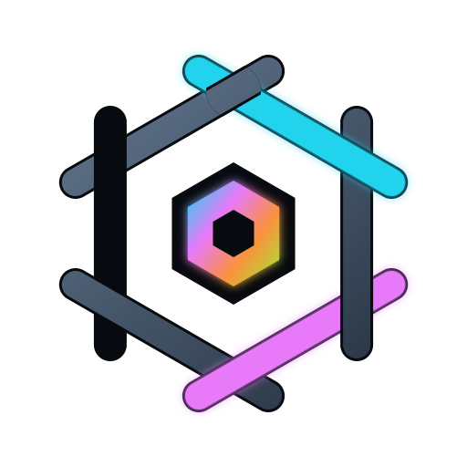

RackWire
NETWORK · POWER · INTERCONNECT PLANNING
Map
Data
Add gear
{{ liveLabel }}
SCAN
{{ world }}
Move
Select
Note
Rack
Fit
{{ issueSummary }}
Network
Power
USB / serial
Other
Unconnected
Over capacity
Path to internet
On battery backup
{{ liveStatusLabel }}
{{ liveMsg }}
LINKS UP
{{ liveStats.up }} / {{ liveStats.total }}
THROUGHPUT
{{ liveStats.tput }} Gbps
MEASURED LOAD
{{ liveStats.watts }} W
PoE DELIVERED
{{ liveStats.poe }} W
LAST FRAME
{{ liveStats.age }}
{{ s.name }}
{{ hint }}
✕
{{ insp.vendor }} · {{ insp.model }}
{{ insp.note }}
DRAW (W)
PoE BUDGET (W)
CIRCUIT (A)
RACK U
OUTPUT BUDGET (W) — overrides circuit math
ASSET ID
SERIAL
LIVE KEY
PORT MAP — monitoring ifName = port ID, comma separated
LOCATION
PURCHASED
WARRANTY ENDS
Internet termination point
Battery source (UPS)
ADD PORT GROUP
{{ g.name }}
{{ r }}
Add ports
Duplicate
Delete
Connections
Devices
Punch list
{{ d.name }}
Any status
Planned
Installed
Export CSV
Import CSV
{{ table }}
Gear library
✕
{{ d.name }}
{{ d.kind }}
{{ d.vendor }} · {{ d.model }}
{{ d.summary }}
{{ cm.title }}
{{ cm.route }}
CABLE TYPE / STANDARD
{{ s.name }}
CATEGORY / GAUGE
RATED CAPACITY
LENGTH (m)
JACKET COLOR
LABEL / ID
STATUS
Planned
Installed
Patch a run of
{{ cm.bulkHint }}
Callout on map
NOTES
{{ cm.check }}
Save cable
Delete
Cancel
Scan or type a code
{{ scan.msg }}
BIND THIS CODE TO
{{ d.name }}
{{ scan.cta }}
Camera
Close
Discover devices on the network
✕
{{ disco.msg }}
Scan
FOUND DEVICES
{{ dev.label }}
{{ dev.sub }}
Recommended model
{{ discoBadge.text }}
NAME
VENDOR
MODEL
KIND
{{ k }}
DRAW (W)
PRIMARY PORTS
×
PoE
{{ discoNetPorts.note }}
OR ASSOCIATE WITH AN EXISTING MODEL
— pick a library model —
{{ d.name }}
Save new model + place
Associate existing
Dismiss
✕
{{ searchCount }}
{{ hit.label }}
{{ hit.sub }}
Keyboard shortcuts
{{ row.keys }}
{{ row.what }}
Close
Snapshots
Save current
✕
{{ v.name }}
{{ v.when }} · {{ v.summary }}
Restore
✕
{{ m.name }}
{{ saveNote }}